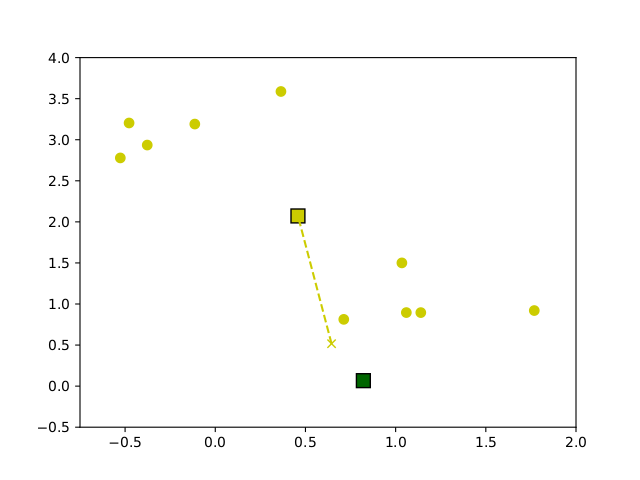
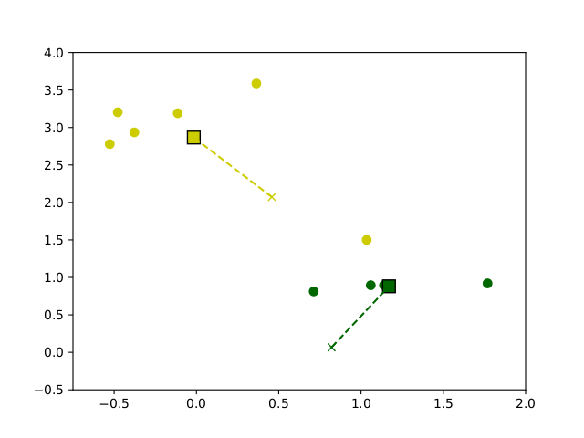
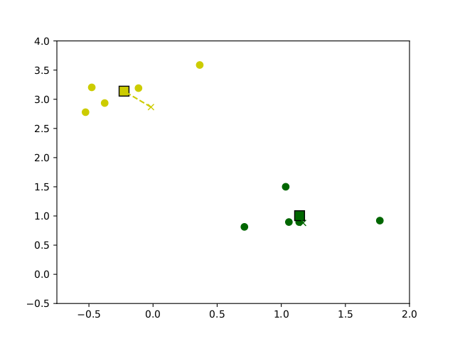
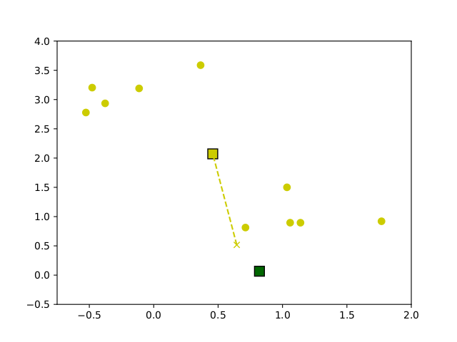
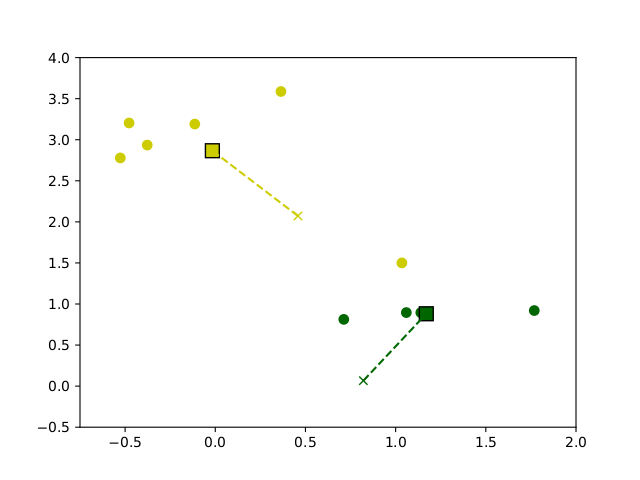
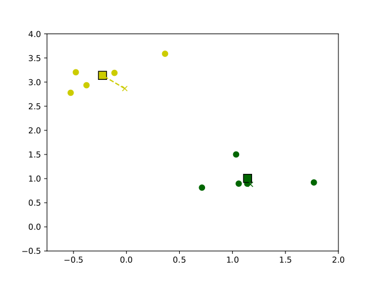

6 Clustering und Hauptkomponentenanalyse
Mit der Hauptkomponentenanalyse haben wir eine Methode kennengelernt, Daten gemäß in Koordinaten darzustellen, die nach inhaltsschwere6 absteigend sortiert sind. Die Konzentrierung der Varianz in den Hauptachsenrichtungen ermöglicht uns
- die Hauptkomponenten zu ermitteln, die den Datensatz optimal in niedrigerer Dimension darstellen (wobei optimal hier bedeutet dass die Varianz in der Differenz \({\mathbf{X}}-\hat {\mathbf{X}}\) minimal ist)
- und in diesem Sinne die Daten optimal auf niedrigere Dimensionen zu reduzieren.
Die noch offene Frage war, ob wir mit universalen Methoden aus den Merkmalen (oder deren Kombination) auf die Spezies schliessen können.
Ein einfacher Blick auf die Plots der Pinguin Merkmale (Abbildung 5.1) läßt uns schließen, dass
- ein Merkmal (z.B.
bill_depth) auf jeden Fall nicht ausreichend ist für eine Unterscheidung) aber - zwei Merkmale (z.B.
bill_lengthvs.flipper_length) die farbigen Punkte (also die Spezies) schon etwas im Raum separieren, während - mehrere Merkmale die Datenwolken im höher-dimensionalen Raum eventuell noch besser separieren, dass aber schwerlich nachvollziehbar ist.
Im 2D Fall allerdings, würde Jan einen zusätzlich gefundenen Pinguin vermessen, den neuen Datenpunkt im Diagramm eintragen und dann schauen, in welchem Bereich er landet um daraus die Spezies abzuleiten. Alles mit reichlich Vorwissen (z.B. dass es 3 Spezies gibt und welche Merkmale die Unterscheidung am besten erlauben).
Für allgemeine Fälle wird die Identifikation der Bereiche (manchmal ist es sogar gar nicht klar wieviele Bereiche nötig oder zielführend sind) und die Zuweisung der Datenpunkte von sogenannten clustering Algorithmen übernommen.
6.1 Clustering im Allgemeinen
Das Ziel ist es in einer Datenwolke Bereiche (cluster) zu identifizieren, sodass die vorhandenen (oder auch neu hinzukommende) Datenpunkte anhand ihrer Merkmale den Bereichen zugeordnet (klassifiziert) werden können.
Je nach Anwendungsfall und Vorwissen kann diese Aufgabe verschieden definiert werden
- Ist die Anzahl der cluster bekannt (wie bei unseren Pinguinen wo es einfach 3 Arten zu unterscheiden gibt), soll der Datenraum optimal in entsprechend viele nicht überlappende Bereiche geteilt.
- Anderenfalls sollen die Anzahl der Cluster und die zugehörigen Bereiche simultan optimal bestimmt werden.
Typischerweise werden die cluster durch ihre Mittelpunkte (centroids) \(c_j\in \mathbb R^{n}\) bestimmt, \(j=1,\dots,K\), wobei \(K\) die Anzahl der cluster ist sowie eine Zuweisungsregel \(k\colon {\mathbf{x} _ i}\mapsto \{1,\dots,K\}\) die zu einem Datenpunkt das entsprechende cluster aussucht. Die Zuweisung passiert generell so, dass einem Datenpunkt \({\mathbf{x} _ i}\) der naheste Zentroid zugewiesen wird, also \(k({\mathbf{x} _ i})\) ist der Index \(j^*\), sodass \[\begin{equation*} \|{\mathbf{x} _ i}- c_{j^*}\| = \min_{j=1,\dots K} \|{\mathbf{x} _ i}- c_{j^*}\| \end{equation*}\]
Die Qualität des clusterings wird über die summierte Differenz \[\begin{equation*} e = \sum_{i=1}^N\|{\mathbf{x} _ i}- c_{k({\mathbf{x} _ i})}\| \end{equation*}\] bewertet.
Wir sehen, dass zum Bewerten (und damit Definieren) der Cluster eine Norm (oder auch einfach eine Metrik) benutzt und machen uns klar, dass das Ergebnis des clusterings stark von der Wahl der Norm abhängen kann.
Ist die Anzahl der Cluster nicht vorgegeben, ist wiederum ein guter Kompromiss zwischen
overfitting – je höher die Anzahl der cluster ist, desto “näher” können die Daten an den centroids liegen, allerdings wird die Klassifizierung oder Kategorisierung weniger aussagekräftig wenn quasi jeder Datenpunkt sein eigenes cluster bildet.
underfitting – wenige Cluster erlauben zwar sehr konkrete Gruppierung von Daten, allerdings mit dem möglichen Nachteil, dass wesentliche Merkmale nicht berücksichtigt oder falsch klassifiziert werden
In der Praxis behilft Jan sich gerne mit einer L-Kurve (oder auch ellbow plot), die den Klassifikationsfehler gegenüber der Anzahl der zugelassenen cluster aufträgt: Diese Kurve \(e(K)\) ist – in der Theorie – positiv, maximal für \(K=1\) und fällt monoton mit der Anzahl \(K\) der cluster. Zeigt diese Kurve einen merklichen Knick bei \(K^*\) wird dieser Wert gerne als passender Kompromiss genommen.
6.2 K-means Clustering
Aus der Definition und der Bewertung der Cluster ergibt sich ein einfacher aber sehr oft und erfolgreich genutzter Algorithmus zum clustering, der k-means Algorithmus. Er funktioniert wie folgt
# Initialisierung: K zufaellige centroids c_j
#
# Wiederholung bis zur Stagnation
# Berechnung der Zuordnung: k: x_i -> c_j
# Update der centroids: c_j <- mean{ x_i | x_i aus cluster c_j }Ausgehend von zufällig gewählten centroids, wird die Zuordnung berechnent und dann der Mittelwert aus jedem Cluster als neuer centroid definiert. Dieses Verfahren wird solange wiederholt bis eine maximale Iterationszahl erreicht ist oder die centroids sich nur noch wenig oder gar nicht mehr verändern. In Abbildung 6.1 ist eine beispielhafte Ausführung des Algorithmus auf Beispieldaten dargestellt.
 

Figure 6.1: Entwicklung der Centroids im Verlauf des k-means clustering Algorithmus auf Beispieldaten
6.3 Clustering und Hauptkomponentenanalyse
Der k-means Algorithmus basiert allein auf der Bestimmung von Abständen und Mittelwerten – beides kann in beliebigen Dimensionen \(n\) der Daten realisiert werden. Allerdings ist die Klassifizierung in höheren Datendimensionen ungleich schwieriger da
für eine vergleichsweise ähnlich große Einzugsbereiche, müssen ungleich mehr clusters verwendet werden. Beispielsweise lößt sich ein Quadrat der Seitenlänge 2 in \(4=2^2\) Quadrate der Größe 1 aufteilen. Für einen Würfel (eine Dimension mehr), braucht Jan entsprechend \(8=2^3\) (das heisst doppelt so viele) Unterbereiche. In vier Dimensionen wären es bereits \(2^4\). Und so weiter.
die Berechnung der Abstände und Zuordnung zu den clusters wird aufwändiger
es gibt ungleich mehr Konfigurationen für die centroids. Es braucht unter Umständen mehr Iterationen um einen stabilen Zustand zu erreichen.
Ein einfacher Zugang wäre es, eine reduzierte Anzahl der Merkmale zur Klassifizierung einzusetzen. Allerdings wird die Qualität der Klassifizierung davon abhöngen, wie geeignet die ausgesuchten Merkmale dafür sind. Ein Blick auf die verschiedenen Plots in Abbildung ?? kann helfen zu verstehen, dass manche Paare von Koordinaten besser als andere geeignet sind um die 3 Pinguinarten zu unterscheiden.
Folgen wir hingegen der Annahme, dass eine hohe Varianz einen hohen Informationsgehalt bedeutet, können wir die Hauptkomponentenanalyse einsetzen um Richtungen von höchster Varianz zu identifizieren und auch Richtungen die überhaupt keine Korrelationen aufzeigen auszuschließen. In der Tat suggerieren die Plots der Pinguindaten in den Hauptkoordinaten (Abbildung ??), dass die ersten Hauptrichtungen die Spezies gut unterscheiden, während die letzten Richtungen ein scheinbar zufälliges Rauschen zeigen.
Auch wenn die Hauptrichtungen die Daten nicht unbedingt besser separieren, ermöglichen sie doch das ausschließen der (transformierten) Merkmale ohne Informationsgehalt und damit einen strukturierten und allgemeinen Ansatz zur Klassifizierung hochdimensionaler Daten mit reduzierten Merkmalen.
6.4 Training und Testing
Das Klassifizieren ist ein erstes konkretes Beispiel dafür, wie aus Daten ein Modell abgeleitet wird. Für die gemessenen Pinguine kennen wir die Spezies, das Ziel ist, ein Modell zu haben mit dem wir zukünftig angetroffene Pinguine anhand ihrer gemessenen Merkmale klassifizieren können.
Allgemein wird für einen solchen neuen Datenpunkt wie folgt vorgegangen
- (Gegebenenfalls) Normalisierung des Datenpunktes durch Skalierung und Abziehen des (zuvor ermittelten) Mittelwertes.
- (Gegebenenfalls) Transformation in (reduzierte) Hauptkoordinaten.
- Test zu welchen centroid \(c_j\), \(j=1,\dots,K\) der (transformierte) Datenpunkt am nächsten liegt.
Der in (3.) ermittelte Index \(j^*\) ist dann das Cluster, dem der Datenpunkt zugeordnet wird.
Der Sprachgebrauch hier ist, dass das Modell mit bekannten Daten trainiert wird und dann für neue Daten angewendet wird7. Um zu evaluieren, ob das Modell “funktioniert” ist das folgende Vorgehen ebenso naheliegend wie standardmäßig angewandt.
Die vorhandenen Daten werden aufgeteilt in Trainingsdaten, mit denen das Modell trainiert werden, und Testdaten, mit denen die Vorhersagekraft des Modells evaluiert wird. Wie die Aufteilung passiert, wird anhand von Erfahrungswerten und im Hinblick auf die vorliegende Aufgabe entschieden.
6.6 Aufgaben
6.6.1 K-means von Hand (T)
Führen sie händisch und nach Augenschein zwei Iterationen des K-means Algorithmus auf den vom folgenden Skript erzeugten (x,z) Daten durch. Dazu bitte, Beispielsweise in Abbildung 6.2, in jedem Schritt die Clusterzugehörigkeiten markieren und die neuen (geschätzten) Mittelpunkte \(c_1\) und \(c_2\) eintragen.
from numpy.random import default_rng
import matplotlib.pyplot as plt
# Zufallszahlengenerator mit "seed=1"
rng = default_rng(1)
# Zufallsdaten mit etwas Korrelation fuer z
x = rng.beta(1, 1, 9)
y = rng.beta(1, 1, 9)
z = (x*x*y)**(1/3)
# Zufallswahl der initialen centroids
cntro = rng.beta(1, 1, 2)
cntrt = rng.beta(1, 1, 2)
plt.figure(1, figsize=(5, 3))
plt.plot(x, z, '.', label='data')
plt.plot(cntro[0], cntro[1], 's', label='$c_1$')
plt.plot(cntrt[0], cntrt[1], 's', label='$c_2$')
plt.legend(loc='upper left')
plt.title('K-means: initialer Zustand')
plt.show()Figure 6.2: Bitte gerne hier die Evolution einzeichnen
6.6.2 K-means als Algorithmus (P)
Schreiben sie eine Funktion, die mittels des k-means Algorithmus einen Datensatz in beliebiger Dimension in K vorgegebene cluster gruppiert und die labels der Daten sowie die Koordinaten der centroids zurueckgeben.
Testen sie die Funktion am obigen theoretischen Beispiel.
6.6.3 K-means fuer die Pinguine
Wenden sie den Algorithmus auf die (zentrierten und auf in jeder Richtung auf \([-1, 1]\) skalierten) Pinguindaten an.
- In der gesamten Datendimension
- Fuer zwei beliebig gewaehlte Merkmale
- Fuer die ersten zwei Hauptkomponenten
Auf Matrixnormen kommen wir noch in der Vorlesung zu sprechen.↩
Download bitte hier – Achtung das sind 370MB↩
allerdings mit 2 unvollständigen Datenpunkten, die ich entfernt habe für unseere Beispiele↩
Im Originaldatensatz ist das Gewicht in Gramm angegeben, um die Daten innerhalb einer 10er Skala zu haben, habe ich das Gewicht auf in kg umgerechnet↩
wir dürfen aber nicht vergessen, dass Daten typischerweise nur eine Stichprobe von Beobachtungen eines Phänomens sind. Die Unabhängigkeit in den features gilt also nur für die gesammelten Daten aber in der Regel nicht für das Phänomen. Für normalverteilte Prozesse liefern die daten-basiert ermittelten Hauptrichtungen jedoch auch die Hauptrichtungen des zugrundeliegenden Phänomens↩
wenn wir Inhalt mit Varianz gleich setzen↩
Im machine learning wird gerne von generalization gesprochen↩